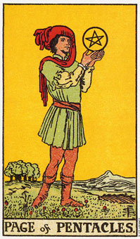

【关键词】 学生 学徒 工匠 投资
星币侍从绿色的衣杉象征着自然科学及其旺盛的生命力。他的头上没有桂冠，而是戴着厚重的红色帽子，这也代表着他可能不是一个胜利者，更不是一个领导者。他是一个学者，有智慧，有热情，有创意，并且成熟稳健。他脚下繁芜的草原象征丰富的知识和充实未来。
星币侍从意味努力学习。
星币侍从双脚坚稳的站立在地面上。手中握有一可绚丽的星币，他所著迷的东西。由于这侍从是土元素中空气的成分，所以思考及计划和金钱、物质财富有关的事情是恰当的。
作为一个人的描述，这侍从有黑色的头发和眼珠，为人务实而稳健，并且喜爱大自然、户外活动和动物。这是一个认真的土型孩子或年轻人。通常他们是少年老成，他们的梦想比宝剑侍从更务实，比权杖侍从更谨慎，也没有圣杯侍从那么理想化。
星币侍从可能是在说，需要认真的执行，以成功地开展一项新方案、或方案的某个阶段。扎根于现实(他双脚踏在土地上)，当这个侍从出现在牌面上时，你可以稳扎稳打的朝向目标工作。
明亮的天空暗示充满希望的前途，以及可能是由于谨慎计划而带来的成功。这张牌通常表示，以学习来作为准备的一种形式。
这张牌也可能指年纪较大的人，，如果他们正开始做某些新事物、或某些他们所不熟悉的事物的话。当开始一项工作或计划时，这张牌代表获得新技能。
大体上的意义
星币侍从象征有关金钱、新工作或学习一门课程的消息。它可以表示去学习某些将会产生实质效益的事物。这个侍从通常代表学生的勤奋向学。透过学习一门课程，或于工作中学习，发挥了自己的能力。有时候这个侍从可能暗示你对于正在学习的科目，变得更专注，甚至更重视学习的成果。
星币侍从描述的是一名认真的年轻人，它正专注于长远的目标上。它可以代表一张开始新工作或学习的牌。
我认识一个十四岁的星币侍从，他拥有好几百块美金，那都是他的家人，包括他的父母亲所给他的。他认真的存下所有的零用钱，并在星期六下午打工赚取额外的钱。当家里任何一个人钱用光了的时候，他会答应他们一些钱。而这些可都是短期的高利贷呢。显然他是他们一家五口之中唯一能够量入为出的人，而家里的其他成员统统是空气(宝剑)和火(权杖)的类型。
正位含义：
1.学习态度端正。
2.热心积极的投身研究工作。
3.求知欲旺盛，头脑优秀。
4.与知识或者研究工作有关的好消息。
逆位含义：
1.挥霍，浪费金钱。
2.知识贫乏，熟悉不够深刻。
3.视野狭窄。
4.精神抖擞。
5.自食其果。
两性关系上的意义
星币侍从意味对某段关系的强烈承诺。侍从在两性关系的分析当中可能象征对一段新关系，或既有关系的一个新阶段或新方向之承诺。
倒立的星币侍从
星币侍从倒立可能暗示着缺乏承诺。它可以形容一个不成熟的人，表现出好动、嬗变、无法落实计划，或浪费体力的现象。它可能暗示你的散漫、容易改变目标，以及分散注意力。
在两性关系分析当中，这张侍从牌倒立可能象征缺乏承诺，并耽溺于肉体的欢愉，以及汲汲于性欲的追逐中。当它出现在星币三的旁边时，意指着你不确定是否要持续你的学习，或是说你已经完成了某项课程，而现在可能不打算继续深造了。
举个例子，卡拉打算要进行一次很长的海外旅游，所以她必须要卖掉她的车――至少她认为是必须的。她问我这桩交易可以得到多少钱，这是出现星币侍从的倒立。那个人只付了一小笔钱当定金，还在筹其余的钱，现在却改变了主意。隔天卡拉打电话告诉我，买主筹不到钱来买车了。